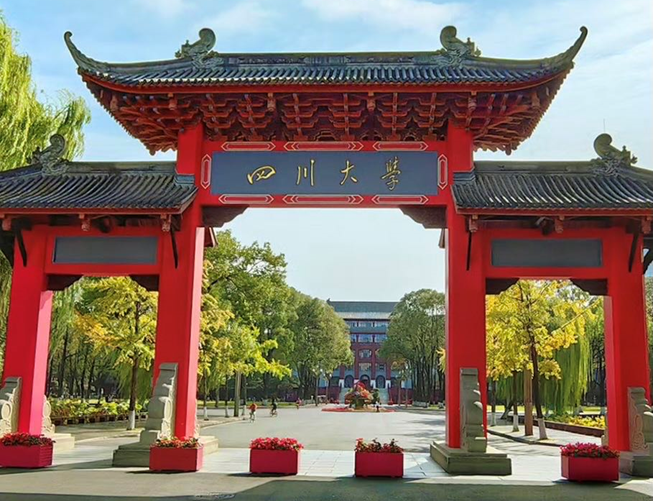

学院通知 · 科研创新
招聘 | 四川大学艺术学院博士后流动站2024年招聘公告
发布时间：2024-05-21
四川大学拥有着悠久的办学历史与优良的教育传统，是教育部直属的高水平研究型综合大学、“世界一流大学”建设A类高校。经过127年的不懈努力，四川大学已经发展成为一所“综合性、研究型、国际化”的顶尖学府。学校现有37个学科型学院（系）及海外教育学院等学院，覆盖了文、理、工、医、经、管、法、史、哲、农、教、艺12个门类，现有博士学位授权一级学科53个，博士交叉学位授权点2个，硕士专业学位授权点37个，博士专业学位授权点11个，博士后流动站48个。 四川大学艺术学院简介 四川大学艺术学院现有艺术学、设计学、美术与书法3个一级学科博士学位授权点和艺术学博士后科研流动站。学院秉持“发挥综合优势，崇尚人文精神，倡导艺术创新，培养一流人才”的办学理念，坚持艺术人才培养、艺术创作与艺术研究并重的办学思路，依托多学科的支撑，立足西南、面向全国，以创建国内综合大学一流艺术学院和培养具有创新精神、创造能力的高素质艺术人才为学院的办学目标。 招收条件 1、年龄在35周岁及以下； 2 、博士学位； 3、身体健康； 4、申请人进站后须全职来我院从事博士后研究工作，聘期结束时须达到博士后出站要求； 5、符合我校流动站的其他招收条件。 相关待遇及政策 1、 参照学校相关文件执行，可根据博土后资历、学术水平、急需程度等条件合理浮动；获批中国博士后科学基金、 四川省相关 人才计划项目者，享受额外资助。按规定发放四川省、成都市博士后生活补助； 2、支持申报各类博士后人才计划、基金或博士后专项； 3、聘期结束后，条件优秀者可竞聘学院相应岗位； 4 、其他相关待遇一人一议。 招收程序 全年招收博士后研究人员，随时接收报名并组织考察遴选。 1、申请人将应聘材料（个人简历+近3年学术成果证明材料）发送至学院的联系邮箱（详见“联系及咨询方式”）； 2、应聘人员通过四川大学人才招聘网站在线应聘，填写个人应聘申请；注册时请提供准确的个人信息，因个人信息不实造成的后果由应聘者本人承担； 3、学校人事处进行资格初审； 4、单位招聘工作领导小组对初审通过的应聘人员进行甄选，确定参加面试人员名单； 5、单位招聘工作小组、相关部处人员对候选人进行面试，党政联席会择优确定拟聘人员； 6、拟聘人员进行体检、公示，无异议后上报学校； 7 、拟聘人员报学校审批，审批通过后转移档案、签订博士后培养协议、办理进站 / 报到手续。 联系及咨询方式 联系电话 （ +86 ） 028-85998100 联系人：王老师 简历投递及咨询邮箱 ysdzb@scu.edu.cn 招聘启事请关注网站 https://recruitment.scu.edu.cn/#/
